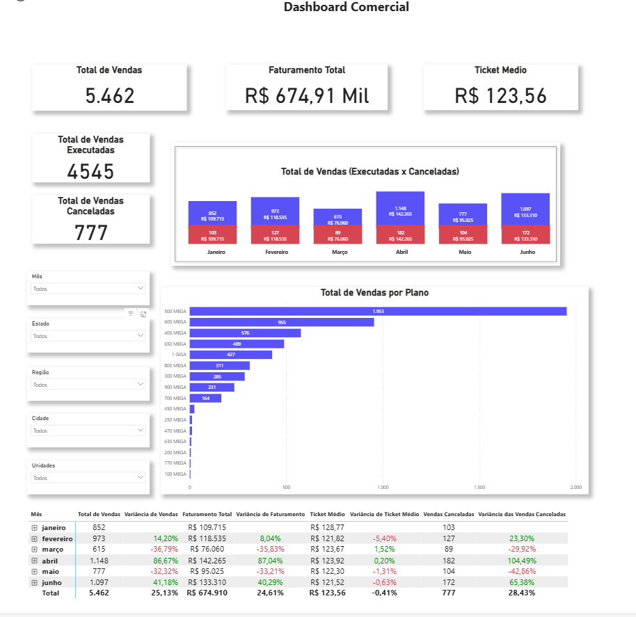
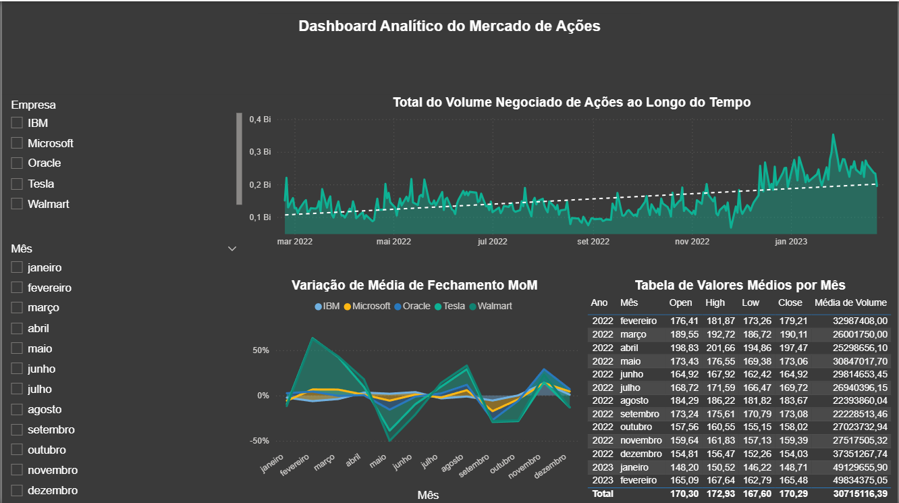
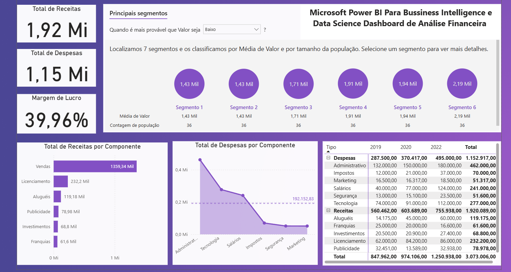

Chatbot Interativo com Python e Langchain
Neste projeto, foram explorados os principais conceitos de integração de modelos de linguagem com diferentes fontes de dados, como páginas web, vídeos do YouTube e documentos PDF, utilizando a biblioteca Langchain e a API da OpenAI. Ao longo do desenvolvimento, foi possível aplicar técnicas de construção de prompts, pré-processamento de dados e ajustes de parâmetros para otimizar as interações do chatbot.
O resultado final do projeto foi um chatbot inteligente capaz de interpretar perguntas e fornecer respostas precisas e contextualizadas, baseando-se nas informações extraídas dessas diversas fontes. Essa solução demonstra a flexibilidade e eficiência da ferramenta, podendo ser adaptada a diferentes necessidades e cenários de uso.
Ferramentas utilizadas:
- Python 3.12.9
- Fontes de dados: WebBaseLoader, YoutubeLoader e PyPDFLoader
- Modelo de linguagem: API da OpenAI
- Técnicas aplicadas: Construção de prompts, pré-processamento de dados e ajuste de parâmetros para otimização das respostas do chatbot.

Ensaio de Machine Learning
Nesse projeto, foram explorados os principais conceitos do treinamento, ajuste de parâmetros e limiares entre overfitting e underfitting de vários algoritmos de Machine Learning dentro das tarefas de classificação,regressão e agrupamento, através de um ensaio de Machine Learning.
O resultado final do projeto foi um painel mostrando a performance desses algoritmos de Machine Learning, a partir da variações dos valores dos principais parâmetros de cada algoritmo, que controlam o estado de overfitting e underfitting.
Ferramentas utilizadas:
- Python 3.12.8 e Scikit-learn
- Métricas de performance: Algoritmos de classificação: KNN, Decision Tree, Random Forest, Logistic Regression, R2, MSE, RMSE, MAE e MAPE, Silhouette Score
- Algoritmos de regressão: Linear Regression, Decision Tree Regressor, Random Forest Regressor, Polinomial Regression, Linear Regression Lasso, Linear Regression Ridge, Linear Regression Elastic Net, Polinomial Regression Lasso, Polinomial Regression Ridge e Polinomial Regression Elastic Net.
- Algoritmos de agrupamento: K-Means e Affinity Propagation.
Análise de Clustering Socioeconômico
Neste projeto, foram aplicadas técnicas de Machine Learning não supervisionado com o objetivo de identificar padrões e segmentar indivíduos a partir de variáveis demográficas e socioeconômicas. O algoritmo KMeans foi o principal método utilizado para a tarefa de agrupamento, com suporte da análise exploratória, codificação de variáveis e avaliação dos resultados via métricas específicas de clustering.
O resultado final do projeto foi uma análise detalhada de cinco grupos socioeconômicos distintos, revelando perfis variados em termos de idade, renda, estado civil, escolaridade, ocupação e localização geográfica, com implicações práticas para políticas públicas e estratégias de mercado.
Ferramentas utilizadas:
- Python 3.12.8, Scikit-learn, Pandas, Matplotlib, Seaborn.
- Métricas de performance: Silhouette Score, Davies-Bouldin Score
- Algoritmos de regressão: Linear Regression, Decision Tree Regressor, Random Forest Regressor, Polinomial Regression, Linear Regression Lasso, Linear Regression Ridge, Linear Regression Elastic Net, Polinomial Regression Lasso, Polinomial Regression Ridge e Polinomial Regression Elastic Net.
- Algoritmos de agrupamento: K-Means e Clustering hierárquico.
Prediction Spam
This project was developed as part of my learning journey in Data Science, with a focus on supervised machine learning techniques applied to text classification. Using Python and libraries such as Scikit-learn, Pandas, and Matplotlib, I built a natural language processing pipeline to automatically identify SMS messages as either spam or non-spam (ham). The final model, based on an MLP neural network and text vectorization with CountVectorizer, achieved high accuracy and recall. The goal is to demonstrate the applicability of machine learning techniques in message filtering and in detecting textual patterns associated with unwanted content.
The model demonstrated robustness, high precision, and excellent predictive capability, especially in identifying spam messages. Although some false negatives still occur (as shown in practical tests), the achieved results are fully satisfactory for real-world applications. This reinforces the effectiveness of the simple and focused pipeline used, while also leaving room for future improvements with class balancing, advanced vectorization techniques, and hyperparameter tuning.
Ferramentas utilizadas:
- Python 3.12.x, Scikit-learn, Pandas, NumPy, Matplotlib.
- Text Vectorization: CountVectorizer.
- Classification algorithm: MLPClassifier (multilayer perceptron neural network).
- Performance metrics: Accuracy, Precision, Recall, F1-score.
- Support functions: train_test_split, classification_report (Scikit-learn).

Dashboard de Análise de Vendas para o Setor Comercial | Teste Prático Alares
Este dashboard foi desenvolvido como parte do processo seletivo para uma posição no setor comercial da Alares, no qual fui aprovado neste teste prático. O projeto teve como objetivo analisar o desempenho de vendas e transformar dados em insights para a tomada de decisão estratégica.
Principal Insights e Recomendaçôes:
A análise dos dados permitiu identificar um padrão de sazonalidade mensal recorrente, caracterizado por uma forte oscilação nas vendas (mês de alta vs. mês de baixa). A partir dessa percepção, a principal orientação estratégica foi a criação de um plano de ação para reduzir essa variabilidade e focar no crescimento do ticket médio, garantindo uma previsibilidade maior e maximizando o valor de cada venda.
Ferramentas utilizadas:
- Power BI para a criação do dashboard e visualização dos dados.
- DAX para cálculos e métricas personalizadas.
- Power Query: Para a extração, limpeza e transformação dos dados (ETL).
- Análise Exploratória de Dados (EDA) para entender padrões e tendências.
- Storytelling com dados para apresentar insights de forma clara e impactante.

Dashboard de Análise de Ações
Este dashboard interativo foi desenvolvido como um projeto de portfólio para analisar e comparar o desempenho de ações de grandes empresas de tecnologia e varejo. O painel centraliza informações cruciais para a tomada de decisão, permitindo uma análise visual de tendências e volatilidade.
Principal Insights e Recomendaçôes:
O painel permite a identificação rápida de tendências de mercado, como o aumento geral no volume de negociações ao longo do período analisado. Sua principal funcionalidade é a análise comparativa da variação mensal (MoM), que expõe a volatilidade de cada ativo e permite ao usuário identificar quais empresas tiveram maior estabilidade ou crescimento em diferentes contextos de mercado, fornecendo uma base de dados sólida para análises de risco e investimento.
Ferramentas utilizadas:
- Power BI para a criação do dashboard e visualização dos dados.
- DAX para cálculos e métricas personalizadas.
- Power Query: Para a extração, limpeza e transformação dos dados (ETL).
- Análise Exploratória de Dados (EDA) para entender padrões e tendências.
- Storytelling com dados para apresentar insights de forma clara e impactante.

Dashboard de Balanço Patrimonial em Power BI
Este projeto de portfólio transforma um Balanço Patrimonial contábil, tradicionalmente estático, em um relatório dinâmico e interativo no Power BI. O objetivo é oferecer uma ferramenta de análise que facilita a compreensão da evolução da saúde financeira de uma empresa ao longo de múltiplos anos.
Principal Insights e Recomendaçôes:
A principal força deste dashboard reside no uso do visual de Matriz com navegação hierárquica (drill-down). O usuário pode expandir ou recolher as contas, indo de uma visão macro (Total de Ativos e Passivos) para uma análise detalhada de subgrupos (ex: Impostos a Pagar). A estrutura permite uma análise horizontal intuitiva, comparando a evolução de cada conta ano a ano e identificando tendências de crescimento ou redução de forma visual e eficiente.
Ferramentas utilizadas:
- Power BI para a criação do dashboard e visualização dos dados.
- DAX para cálculos e métricas personalizadas.
- Power Query: Para a extração, limpeza e transformação dos dados (ETL).
- Análise Exploratória de Dados (EDA) para entender padrões e tendências.
- Storytelling com dados para apresentar insights de forma clara e impactante.

Dashboard de Análise Financeira para Business Intelligence
Este projeto foi desenvolvido para oferecer uma visão 360° da saúde financeira de uma empresa, consolidando os principais indicadores de desempenho (KPIs) em um painel interativo. O dashboard permite que gestores e analistas monitorem receitas, despesas e lucratividade de forma clara e ágil.
Principal Insights e Recomendaçôes:
O painel destaca imediatamente a performance geral através dos KPIs de Receita Total (1,92 Mi), Despesa Total (1,15 Mi) e Margem de Lucro (39,96%). A sua principal funcionalidade é a análise de componentes, que permite identificar rapidamente quais são as maiores fontes de receita (ex: Vendas) e os principais centros de custo (ex: Administrativo e Tecnologia), como detalhado nos gráficos de barras e Pareto. A tabela de valores anuais complementa a análise, mostrando a evolução histórica para uma tomada de decisão mais estratégica.
Ferramentas utilizadas:
- Power BI para a criação do dashboard e visualização dos dados.
- DAX para cálculos e métricas personalizadas.
- Power Query: Para a extração, limpeza e transformação dos dados (ETL).
- Análise Exploratória de Dados (EDA) para entender padrões e tendências.
- Storytelling com dados para apresentar insights de forma clara e impactante.
Sinta-se a vontade para entrar em contato.